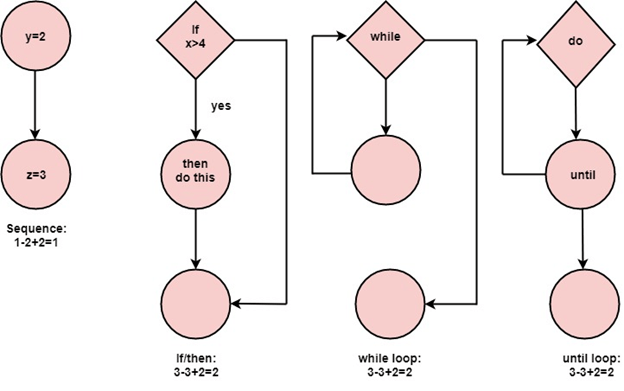
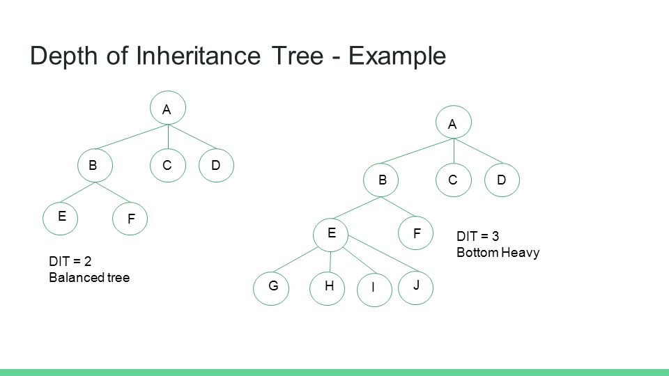

Практическая реализация метрик кода в Visual Studio
Вычисление метрик в Visual Studio
Значения столбцов и их значения в коде
Формула
MI = MAX(0, (171 — 5.2 * ln(HV) — 0.23 * CC — 16.2 * ln(LoC)) * 100 / 171
- HV (Halsted Volume) – вычислительная сложность
- CC (Cyclomatic Complexity) - цикломатическая сложность
- LoC (Lines of Code) - количество строк кода
Цикломатическая сложность
Глубина наследования
Связь классов

Количество строк кода
Минусы метрик:
- Зависят от языка программирования
- Не учитывают человеческий фактор